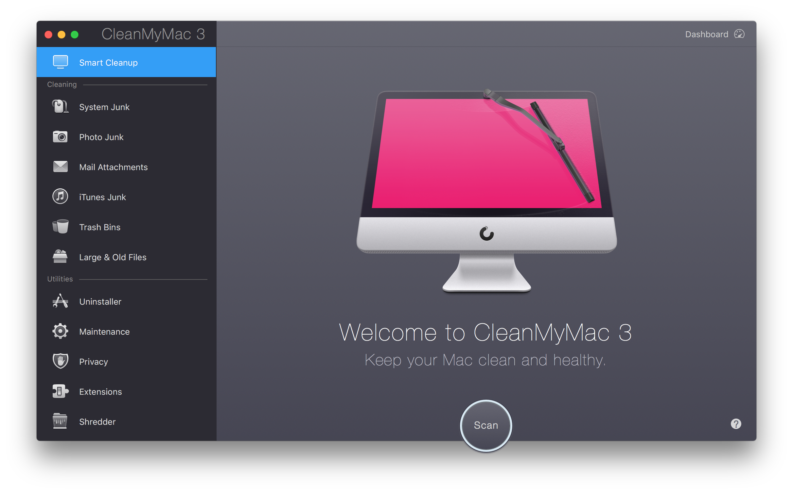

Welcome to CleanMyMac 3!
About CleanMyMac 3
CleanMyMac 3 is a next evolutionary step of a well-known cleaning app chosen by millions of Mac users. Beautifully designed in a whole new manner, CleanMyMac 3 has become far more than just a cleaning utility. Now not only it removes gigabytes of junk, but also monitors and optimizes your Mac’s performance and health.
New cleaning modules provide even more advanced options for accurate reclaim of your disk space, while a complete set of diverse utilities manages issues with health, monitoring, system maintenance, private data, uninstallation of apps, and many more.

What’s new?
- Mail Attachments module, which removes locally stored copies of downloads and attachments.
- Photo Junk module, which removes supporting Photos files and replaces heavy RAW originals with high-quality JPEGs.
- iTunes Junk module, which removes outdated device backups, broken downloads, old iOS software updates, and copies of iOS apps stored locally.
- Maintenance module, which lets users run a myriad of optimization tasks.
- Privacy module, which cleans up chat, browsing and download history as well as cookies, recent items list, and more.
- Dashboard, which shows Mac performance in real time and provides the RAM cleanup feature.
- CleanMyMac 3 Menu, which gives users access to multiple CleanMyMac 3 tools without launching the application itself.
- Health Alerts, which help diagnose hardware and process issues.
- Excellent makeover.
- New localizations: Ukrainian and Dutch.
System requirements
- macOS 10.9 or higher (starting from CleanMyMac 3.8.5)
- macOS 10.8 to 10.12 (up to CleanMyMac 3.8.4)
- 43.3MB of free disk space
- Intel Macs only